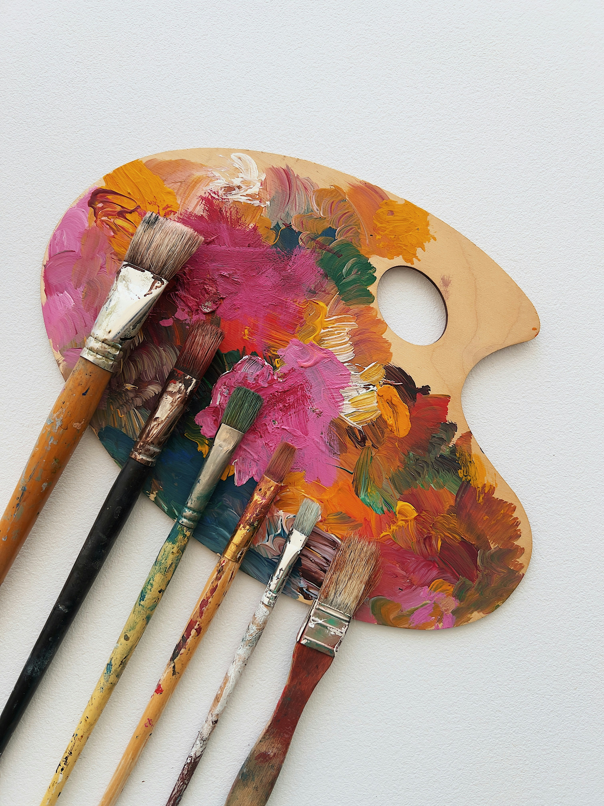

Readings that made me think


Boris Groys argues that the advent of the internet has both deinstitutionalised art and also countered the dissimulation of the frame of reality that has defined our experience of fiction/art.
How can artists balance internet virality with making "good art"? Or is good art simply what provokes?